About the client
Carry Out is a food delivery company from Ukraine. They had their restaurants and food markets, so it gives them a dominant position among competitors.
what was done
After we signed up the contract, the first thing I decided to do is to try competitors apps and get some food. I tested it in 2-3 days to understand their weak points.
After that, I started my work on information architecture, sketches and design.
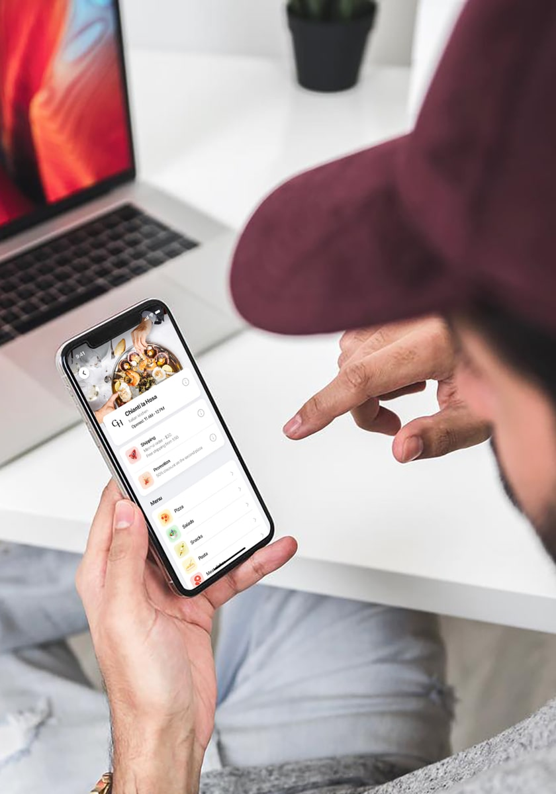Page with restaurants
Here you can search for your fav dishes or even if you don't know what you want – you can explore top dishes, best restaurants and events.
I made this page in light tones. The main focus here is on tasty photos of dishes and easy navigation.
Each restaurant has its page with details, offers, delivery info, categories and chef recommendations.
List of products
When you click on the category you go to the page with a list of products. It contains basic info about the product and tasty photos.
You can select the size and quantity in a pop-up, add it to bag and then continue shopping.
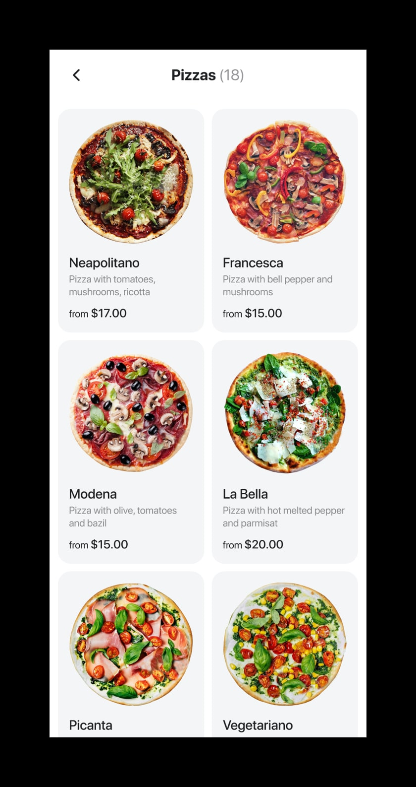 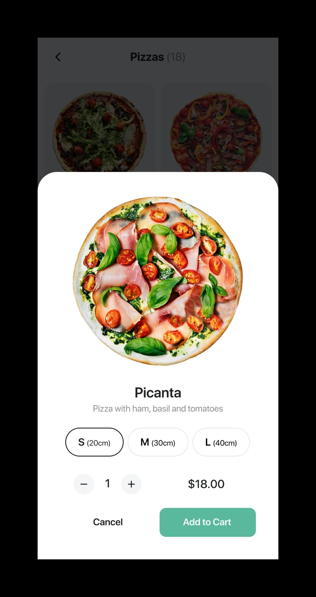 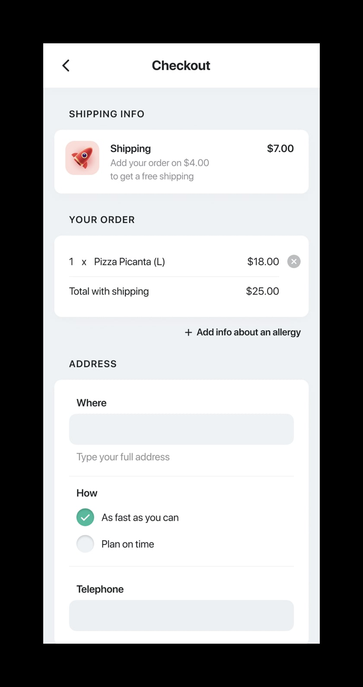 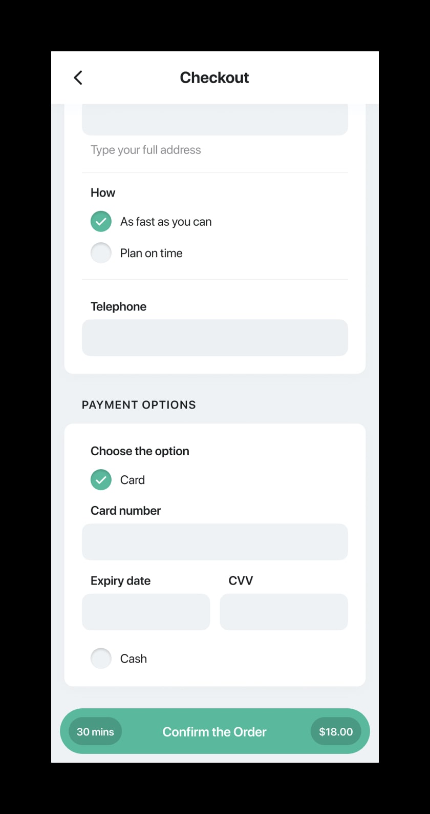 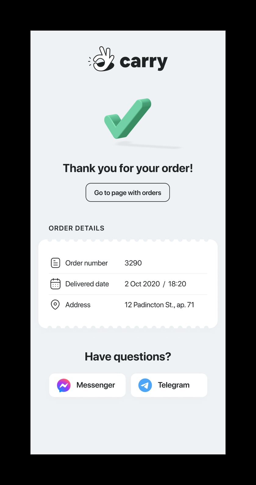Page with my orders
I didn't see sense to display all orders on the main screen, so I hide archived orders on a second tab.
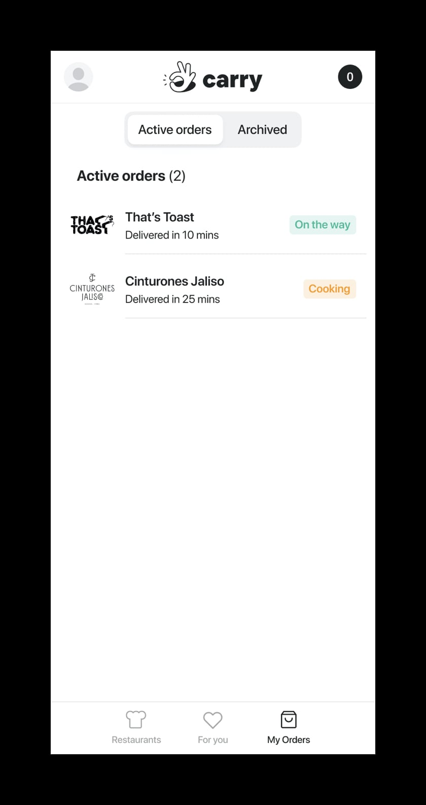 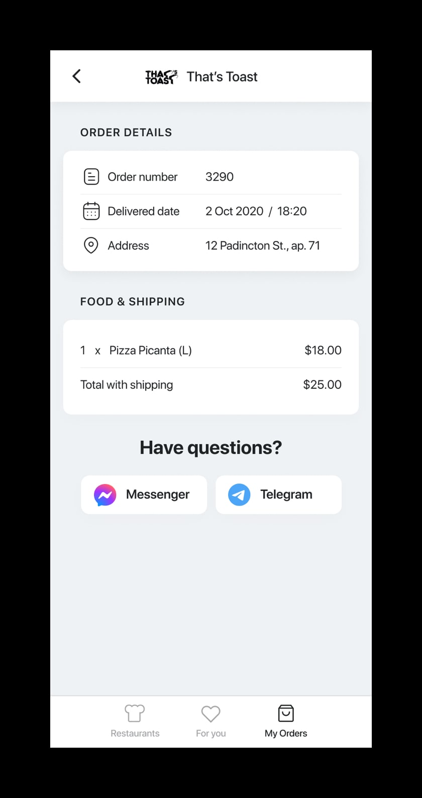You can explore order details and even ask a question in messenger for a specific order.
Login and registration process
I thought that the welcome page should also look nice. It shouldn't be regular and boring. So, let's see what I've done.
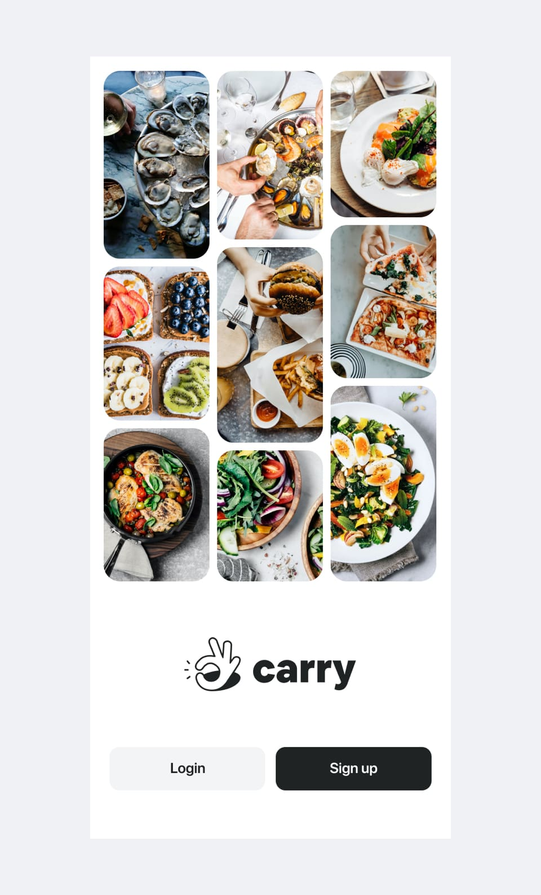I truly believe that these photos will help make an appetite grow stronger.
The login page begins with a quick login with social networks. If somebody wants to log in via email – we have this option too.
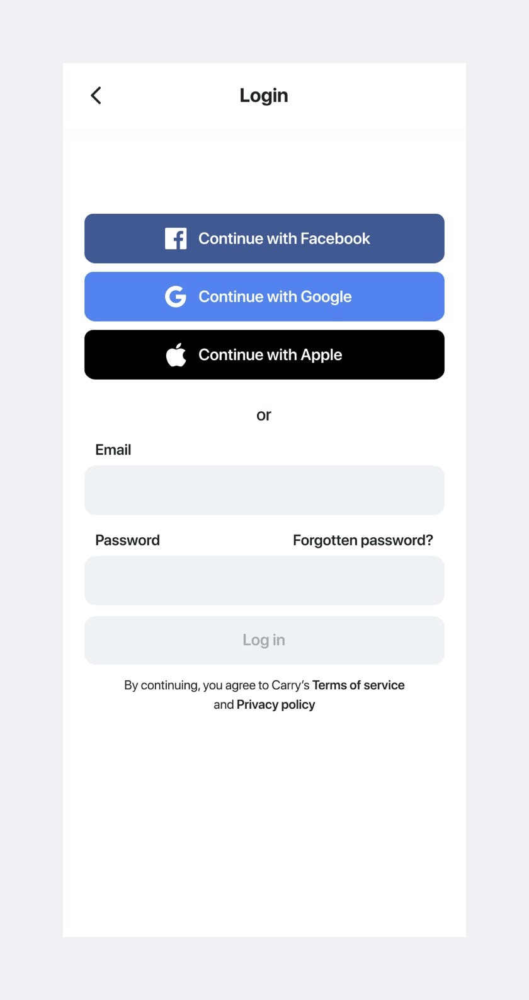 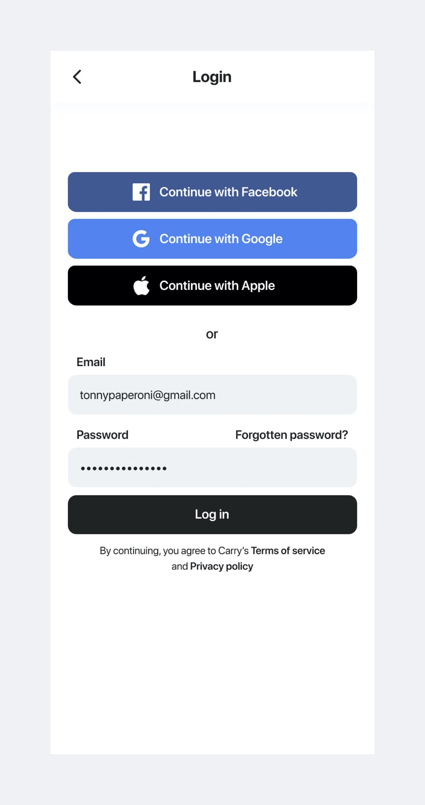The registration page also has two options to make a profile: quick sign up via social networks and an old method via email.
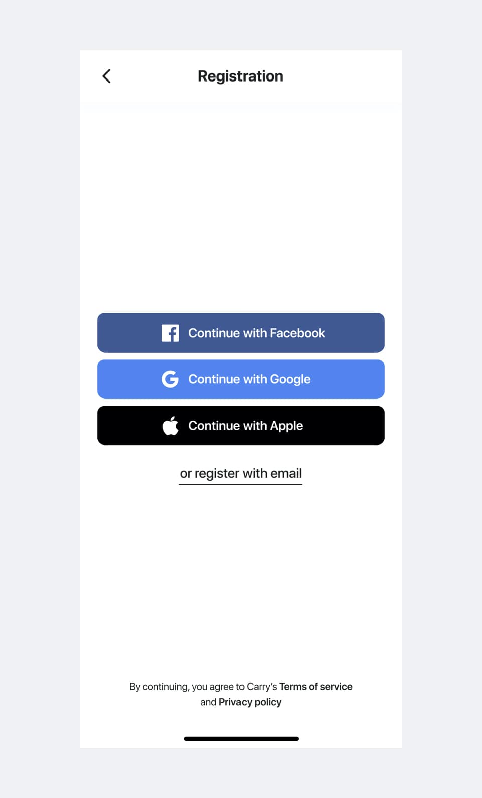 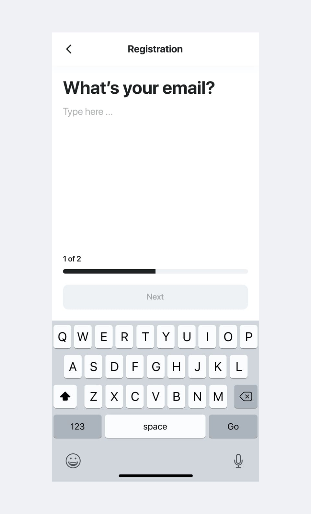 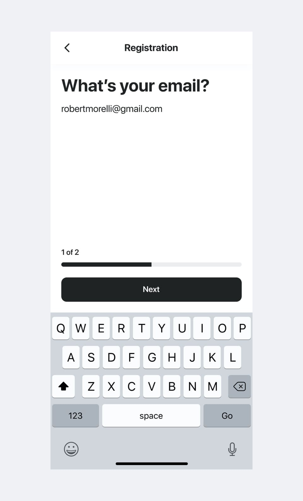 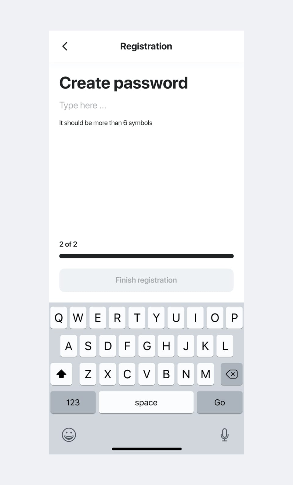 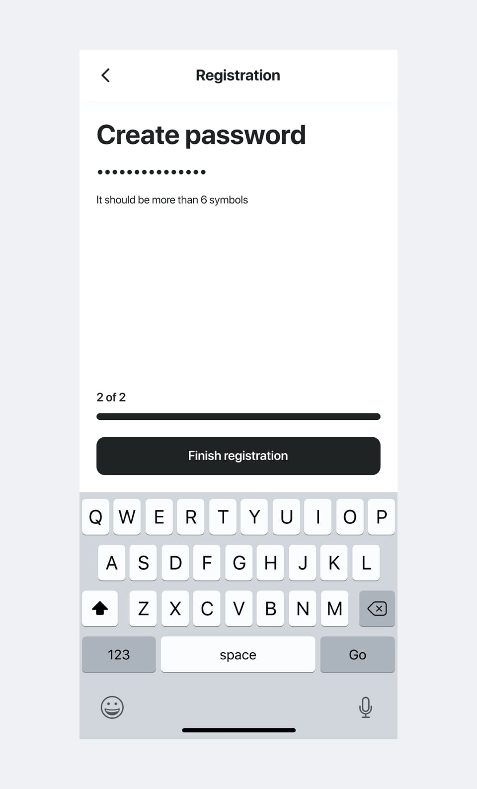